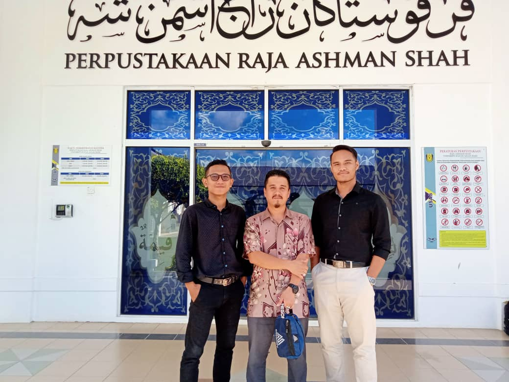
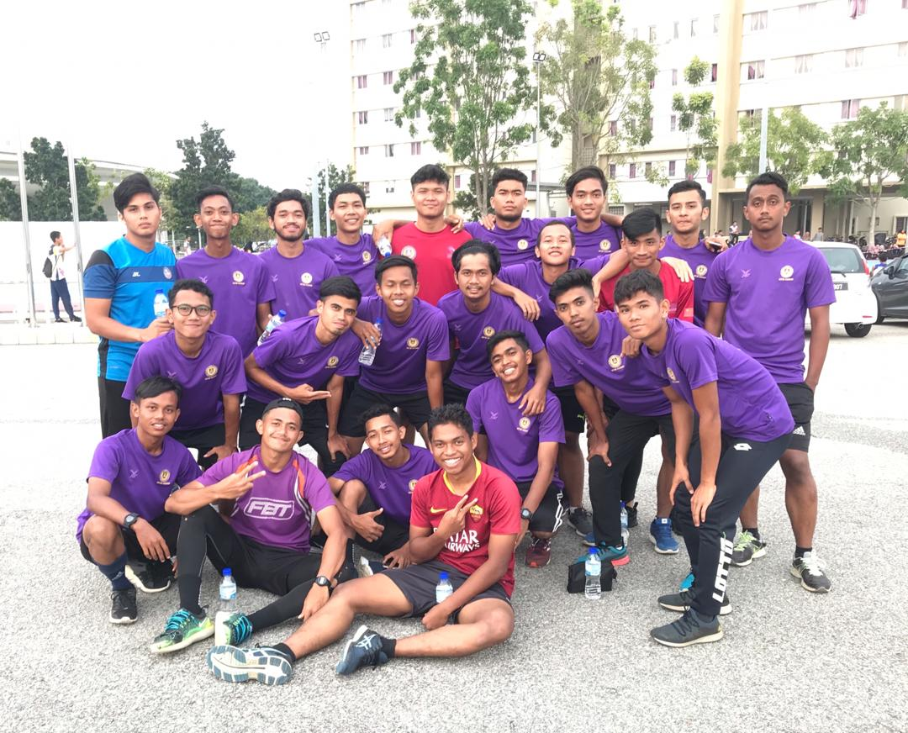

EXPERIENCE
'Throw Away The Bad Experience But Save The Lesson'
INTERNSHIP AT USAS LIBRARY
This is where for the first time I did my industrial training or internship at the Raja Ashman Shah Library, Perak. This training was done when I continued my Diploma at UiTM Merbok after the end of semester 3 and then I re-entered to the UiTM to continue my last semester there. During my internship, various new knowledge that I could learn while in the library such as making catalogs via computer, compiling books with the right method, recording materials, and so on. I also did the internship for 3 months and I really enjoyed learning something while there and getting to know the library staff there who were very kind when teaching and serving me while I was there. It was also an appreciation for me because I was able to do something new throughout my life.
|  |
KARISMA 2020 EXPERIENCE
This is when I was selected to represent UiTM Kedah in the KARISMA 2020 football competition at UiTM Puncak Alam, Selangor. This competition is to represent UiTM for each state. I am very grateful to be selected in this UiTM Kedah team because it is not easy to be selected into the team. For your information, this was my second year I represent my university football team. I am very grateful to my coach for bringing me into the team for 2 years when I was here to help the team during the competition. My achievement for the team is we have reach into the quarter final for the last 2 years and it was a good thing for me and my team to make our univeristy famous. From there, I gained a lot of experience in my life, especially in the sport of football because it is the sport that I am most interested in and my future ambition.
|  |